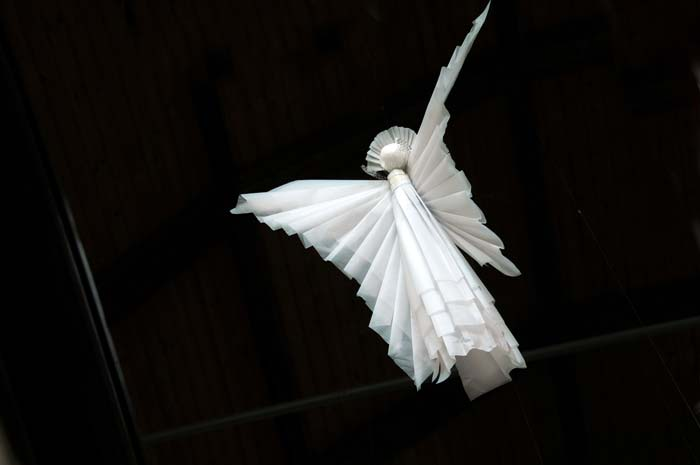

<div id="oneCol" class="row">
    <div class="large-12 columns">
        <div class="medium-10 medium-offset-1 end columns">
        <h3>St Michael&rsquo;s and All Angels Church, Oxford (2009)</h3>
    <p>We  were commissioned by the Church to encourage local school children and community to make one hundred &lsquo;flying&rsquo; angels to celebrate the Church&rsquo;s  centenary.  The installation of over 150 angels, was part of 2009 Oxford City Artweeks and remained in situ for much of 2009.</p>
		</div>
		<div class="center">
        <a href="angels001.html" title="View next And All Angels photograph"></a>

    <span class="links"><a href="angels001.html">next</a></span>
        </div>
     </div>
</div>


